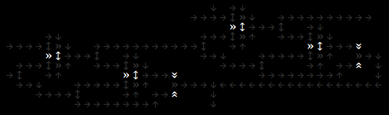

The beauty of simple rules creating complex and unique behaviors never ceases to amaze me. In this post, I will be discussing how basic arrows can be combined to create larger logic gates and eventually an adding machine
We will be working with three types of arrows: the normal arrow (→), the invert arrow (»), and the divide arrow (↔). By combining these arrows, we can create a variety of logic gates, including the OR gate and the NOT gate. While these two gates allow us to create any Boolean expression, having AND and XOR gates makes building even easier
Using DeMorgan's Law, we can create an AND gate using NOT and OR gates. This is equivalent to NOT ((NOT A) OR (NOT B)), and when translated to arrows, it looks like this.
The XOR gate is a bit more challenging to create when working with arrows. One of the difficulties is that there is no easy way to cross lines. In a real chip, there are various levels for wires to go around each other, but in a 2D representation like this, that is not possible. Later in the post, I will share my partial solution for creating a XOR gate with arrows. However, I must admit, I took the lazy route and found a solution that uses NOR gates and does not overlap.
Now we have the basic gates we can combine them to make a simple adder
Addition is a useful thing for computers to do. This can be seen in a computer's arithmetic logic unit which is a central part of a computer's CPU.
We can start building an adder. The truth table is below:
| Input A | Input B | Output Sum | Output Carry |
|---|---|---|---|
| 0 | 0 | 0 | 0 |
| 0 | 1 | 1 | 0 |
| 1 | 0 | 1 | 0 |
| 1 | 1 | 0 | 1 |
The most common half adder design looks like the following. We can't implement this directly as there's no way for us to make the line cross, in red below
To get this to work. I cross lines by taking the XOR of the XOR. I found that the following works: A = XOR(XOR(A, B), B). This function is seen in the arrows below

It takes many arrows for lines to cross by replacing it with that function. I think it would be fun to work on a line reduction function that could take a binary function and reduce the number of line crosses or where it would be cheaper than using 3 xors.I'm sure there is a way to solve this on a boolean algebra side. Even a function that takes a boolean expression and outputs the number of line crosses would allow that to be used in an optimizer function
Converted into arrows:
Right now we just built a half-adder where the input in missing a carry. We can fix that by adding that. Below is a way of doing that with two half adders and an or gate

Using the half adders is useful as we don't have to design another circuit and we can just put half-adder blocks into the new design
And finally we can combine 4 full adders to make a 4-bit adder

I enjoyed making this and it was a fun challenge. I also learned lots. I hope to pick it up again and try again to make a simple computer. I sure everything could be much smaller and faster than it is.
The game logic runs in Rust with help from ggez; a window management, 2D graphics and event handling library. Written in rust allows for fast simulations of a large number of options. The Rust library is used through a C interface using ccfi in python.
The Python side is where the arrows are being placed. A "Board" object is to rust to be displayed and run. In addition it contains higher level drafter, where more complex boards can be designed. Right now in the drafter, there is a topological function to arrange sub-blocks and a basic router for wires using breadth first search. Some of these I dropped but having the flexibility of trying different things quick is important
If you would like to take a look and run it, it's avalible on github